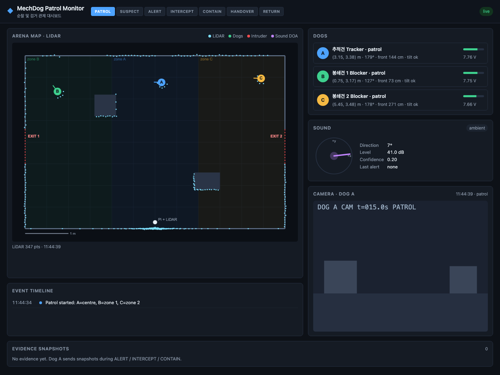
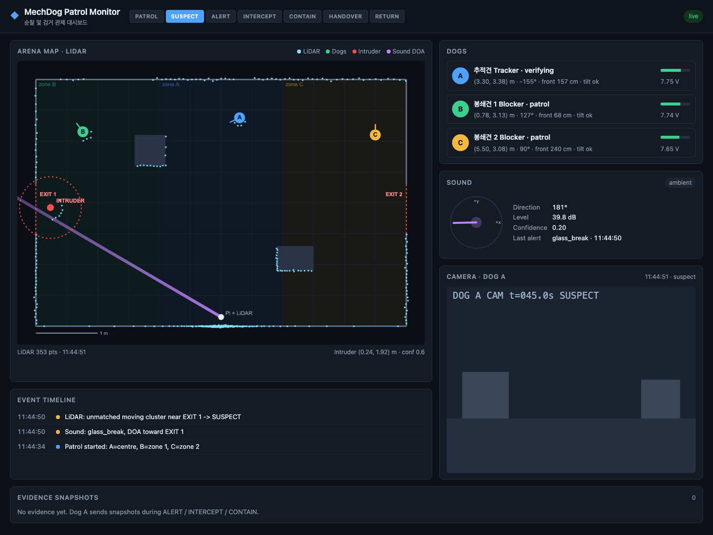
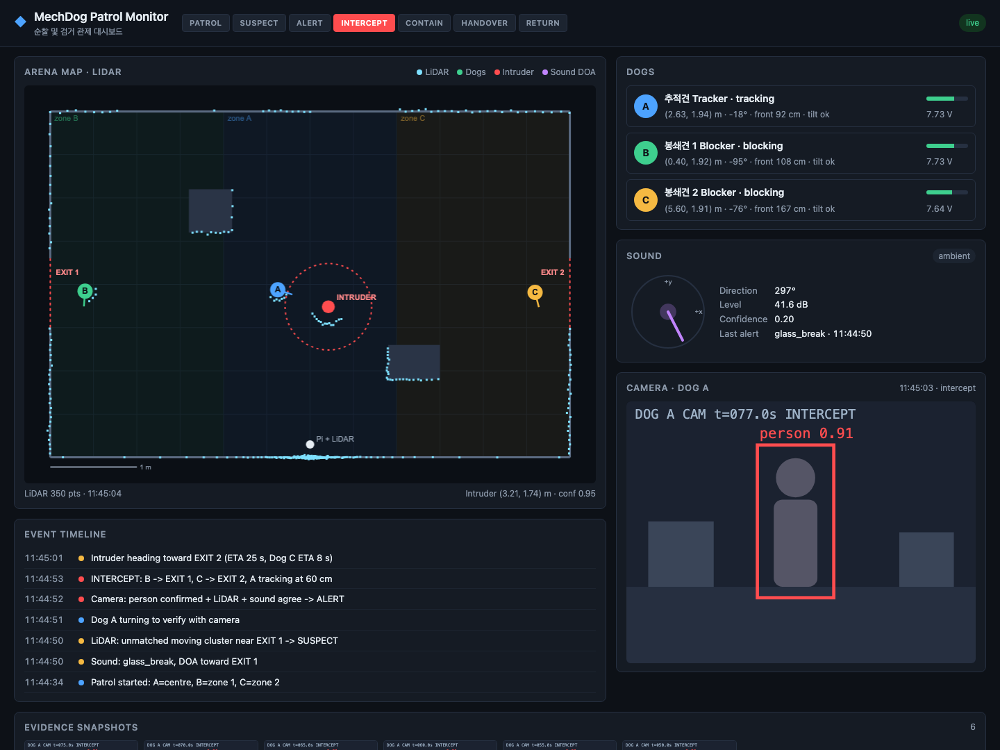

Patrol & apprehension, with a live monitor
How to build the 3-dog security patrol from patrol_apprehension_plan.md, plus a web dashboard that shows everything the robots sense: LiDAR, dog positions, sound alerts, camera and mission state.
What you are building
Three MechDogs and a Raspberry Pi control tower split the arena and patrol it. When an intruder appears, they don't chase it. They predict where it is going, block the exits first, surround it at a safe distance, warn it and collect evidence, then hand over to the control room. 검거 = 탐지 → 확인 → 출구 봉쇄 → 포위 → 경고 → 증거 확보 → 관제 인계.
The new piece is the Patrol Monitor: a web page that shows, live, everything the system sees and decides. It is the "control room" in the demo, and your main debugging tool while you build.

System architecture
As in the original plan, the Pi is the brain and the dogs are the body. The monitor server is a separate small process (on the Pi or a laptop) that only listens. It never commands the robots, so a dashboard crash cannot affect the demo.
Rule of thumb: anything that moves a robot goes through the Pi brain. Anything you only want to see also goes to the monitor. During development you can point the dogs straight at the monitor to watch their sensors before the brain exists.
What data the monitor shows
Seven message types cover everything. The full spec with examples is in docs/message_schema.md.
| Type | From | Rate | Shown as | Key fields |
|---|---|---|---|---|
lidar | Pi | 5 Hz | Cyan points on the map | origin, points [[deg, m]…] |
dog | Pi (x, y) + each dog (sensors) | 10 Hz | Dog markers with heading; status cards | x y heading_deg state battery_v front_cm tilt |
intruder | Pi | 5 Hz | Red marker, 0.5 m ring, trail | x y confidence |
sound | Pi (ReSpeaker) | 1 Hz + alerts | Compass, DOA ray on the map | label doa_deg level_db alert |
camera | Dog A | ~1 Hz | Live frame, evidence gallery | image (data URL), evidence |
mission | Pi | on change | State pipeline in the header | state |
event | Pi | on change | Timeline | level text |
Why split dog data? A MechDog does not know where it is. Its position comes from the Pi's LiDAR tracking, while battery, ultrasonic and tilt come from the dog. Both send partial dog messages and the monitor merges them.
Arena and coordinates
Everything uses one coordinate system: metres, origin at the bottom-left corner, x to the right, y up, angles counter-clockwise from +x. The layout lives in web/arena.json. Measure your real arena and edit that file, and both the dashboard and the simulator follow.
Mount the LiDAR at dog body height (10–15 cm) so it sees the dogs and the intruder's legs or RC car. Put it where it sees both exits with as few shadows as possible. The boxes cast blind spots, which you can see in the dashboard as gaps in the cyan points.
Mission state machine
This runs on the Pi. Every transition is sent as a mission message, and the dashboard header highlights the current state.
| Anomaly source | Signal | What the monitor shows |
|---|---|---|
| LiDAR | Moving cluster that matches none of the 3 dogs | Intruder marker (confidence 0.6) |
| Sound | Glass break / door + DOA | Purple ray from the Pi toward the sound |
| Vision | YOLO person, ArUco marker or unknown face | Box in Dog A's camera frame |
Go to ALERT only when two sources point at the same place. In the monitor, check that the DOA ray actually passes near the intruder marker. That is the cross-check, made visible.
The monitor, scene by scene
These are real screenshots of web/index.html driven by server/simulator.py, which follows the demo script in section 5 of the plan. Use them as the target picture for each stage.



Run it yourself
cd mechdog-patrol-monitor
pip install -r requirements.txt
uvicorn server.app:app --host 0.0.0.0 --port 8000 # terminal 1
python -m server.simulator --speed 3 # terminal 2
# open http://localhost:8000Roadmap
A suggested 8-week plan built from the plan's development stages (MVP → extensions 1–3). The monitor track runs alongside the whole time: each week, replace one simulated stream with the real one.
Adjust the week lengths to your real schedule. The order matters more than the dates: don't start Ext 2 before the MVP works end to end on real robots.
Step by step
Tick items as you go. Ticks are saved in this browser only.
Setup and measurements
Pi ↔ dog communication
Pi sensing: LiDAR map and dog tracking
MVP: detect and block exits
Sound direction and cross-check
siren-alert-edge-ai/)Prediction and 3-dog containment
Face recognition
Real-Time_Face-Recognition…)Demo rehearsal
Suggested team split
Four tracks that can work in parallel because the message schema is the contract between them. Agree on docs/message_schema.md in week 1 and don't change it without telling everyone.
Track 1 Dog firmware
MicroPython on the 3 ESP32-S3 dogs: Wi-Fi, command parser, gait calls, safety reflexes, status messages, MP3 and dot-matrix, Dog A camera.
Track 2 Perception (Pi)
LiDAR driver, background subtraction, clustering, dog/intruder matching, YOLO, ReSpeaker DOA and sound classification.
Track 3 Brain (Pi)
State machine, exit prediction, Hungarian assignment, path to waypoint, handover. Emits mission, intruder and event.
Track 4 Monitor & integration
This folder: dashboard, simulator, logging/replay, arena config, demo screen. Also owns the end-to-end test runs.
Connecting real hardware
Each snippet replaces one part of the simulator. Send to the IP of the machine running server/app.py.
Dog status (MicroPython on each MechDog)
import network, socket, ujson, time
MONITOR = ("192.168.0.10", 9000) # monitor IP
NAME = "B"
sock = socket.socket(socket.AF_INET, socket.SOCK_DGRAM)
while True:
msg = {"type": "dog", "from": NAME,
"battery_v": read_battery(), "front_cm": ultrasonic.distance_cm(),
"tilt": "ok" if upright() else "fallen", "state": current_state}
sock.sendto(ujson.dumps(msg), MONITOR)
time.sleep_ms(100)read_battery, ultrasonic and upright stand for the Hiwonder MechDog library calls for your firmware version.
LiDAR scan (Python on the Pi, RPLIDAR example)
import json, socket
from rplidar import RPLidar # pip install rplidar-roboticia
MONITOR = ("127.0.0.1", 9000)
ORIGIN, MOUNT_DEG = [3.0, 0.15], 90 # where the sensor's front points, arena degrees
sock = socket.socket(socket.AF_INET, socket.SOCK_DGRAM)
lidar = RPLidar("/dev/ttyUSB0")
for scan in lidar.iter_scans():
pts = [[round((MOUNT_DEG - a) % 360, 1), round(d / 1000, 3)] for _, a, d in scan if d > 0]
sock.sendto(json.dumps({"type": "lidar", "from": "pi", "origin": ORIGIN, "points": pts}).encode(), MONITOR)Dog A camera snapshot (Pi pulls from the ESP32-S3 camera, posts to the monitor)
import base64, requests, time
CAM = "http://192.168.0.21/capture" # ESP32 camera snapshot URL
while True:
jpg = requests.get(CAM, timeout=2).content
requests.post("http://127.0.0.1:8000/api/ingest", json={
"type": "camera", "from": "A", "note": state,
"image": "data:image/jpeg;base64," + base64.b64encode(jpg).decode(),
"evidence": state in ("INTERCEPT", "CONTAIN")})
time.sleep(1)Brain → monitor
def emit(msg):
sock.sendto(json.dumps(msg).encode(), MONITOR)
emit({"type": "mission", "from": "pi", "state": "ALERT"})
emit({"type": "intruder", "from": "pi", "x": 2.41, "y": 1.98, "confidence": 0.95})
emit({"type": "event", "from": "pi", "level": "alert", "text": "LiDAR + sound agree -> ALERT"})
emit({"type": "dog", "from": "B", "x": 1.20, "y": 0.35, "heading_deg": 90}) # tracked positionRisks and what to watch on the monitor
| Risk | Mitigation | How the monitor shows it |
|---|---|---|
| Dogs too slow to reach exits | Park dogs near exits, slow the intruder | "Intruder heading to EXIT 2 (ETA …, Dog C ETA …)" events |
| LiDAR confuses dog and intruder | Predict dog position from commands, add reflective markers | Intruder marker jumping onto a dog |
| Wi-Fi lag or drop | 1 s no-command stop, dedicated router | Dog card turns LOST, faded marker |
| YOLO too slow on the Pi | Lighter model, or OAK-D Lite | Camera timestamp falls behind |
| Person safety | 30 cm keep-out reflex, slow walking in the demo | 0.5 m ring around the intruder: dogs should stay on it |
| Battery runs out mid-demo | Spares, check before each run | Battery bars (6.4–8.4 V) |